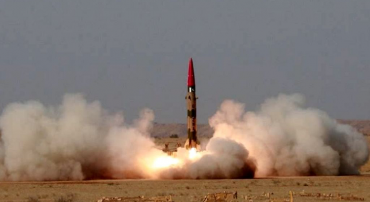

Will Saudi Arabia Have Nuclear Weapons?
Last, week Haaretz published an opinion piece authored by Chuck Freilich titled 'Can a Nuclear-armed Saudi Arabia Be Israel’s Partner for Peace?'The article was written by Charles Freilich, a former Israeli deputy national security adviser and long-time senior fellow at Harvard’s Belfer Center.
In his article, Freilich wrote:
'The Prime Minister of Israel, who engaged people in four stages of tedious elections, caused the catastrophe of the annexation of the West Bank and failed to cope with the Covid-19 outbreak and the resulting economic crisis, is currently responsible for one of the most serious problems of Israel’s national security – the creation of nuclear weapons in the middle East.The creation of a nuclear region is not only not weakening, but also gaining momentum.'
Furthermore, the article comes at an interesting time for the US.The American presidential election is slated to take place this November.Current President Donald Trump supports the polices of Netanyahu.He has been Israeli Prime Minister since 2009.He is affiliated with the Likud party in Israel.A lot of people in Israel do not agree with Netanyahu’s polices.
Overall, it is very clear that there will not be another nuclear deal with Iran.There will be an old agreement, the JCPOA reinstatement, with a few modifications.The agreement was signed during Barack Obama’s tenure as the US president.The Democratic presidential candidate, Joe Biden, agrees with the plan.
In reality, Iran is waiting for Donald Trump not to be re-elected.Even though Israel has a huge lobby and support in US, including Trump’s son in law, Jared Kushner.At present, even Israel has a hard time believing that Trump will get re-elected.
Currently, many Israeli politicians are more interested in promoting a new agreement with Iran and gain Joe Biden’s support.The agreement is imperative to make sure that Iran stops developing nuclear weapons.Even though it is very hard to trust Iran, it is better than Iran developing even more weapons.
At the same time, relations with US and Iran have been strained for a while, when former US President Jimmy Carter ruined the good relationship with Shah and betrayed him in favor of the Saudis.
Moreover, the Saudis are building more reactors with the aide of China.The first reactor was recently completed.There are more reactors planned, and they easily can be turned into strategic defense use.Hence, the Saudis can become a problem to the west soon enough.The scenario is almost identical to Iran of how it all started.
Last month, The Wall Street Journal stated that Saudi Arabia, in cooperation with China, built a secret facility to produce so-called 'yellow cake' from uranium ore, which is used to make nuclear fuel.
This event indicates significant progress in Riyadh’s efforts to acquire nuclear technology.It should be noted that Saudis are very adamant to allow international inspections in the country pertaining to the nuclear reactor.
Two years ago, the Saudi Prince made a statement that if Iran develops a nuclear bomb, the Saudis will develop a bomb as well.In 2015, Russian Channel Zvezda published a leaked video that showed how, after an explosion, clouds of smoke appeared over residential buildings, shaped like a so-called 'nuclear mushroom.'
At the time, Pakistan denied providing Saudis nuclear technology.However, UK publications stated that Saudis made a secret deal with Pakistan to provide free crude in the exchange of the nuclear technology.
It is certain that Saudi Arabia could become an issue to the West and possibly pose a threat.Hence, it is important to not discount the Saudis as potential significant problem in the Middle East.A lot would be riding on the agreement with Iran in the near future.
[bsa_pro_ad_space id=4]
Share on Facebook Tweet Follow us
Posted On: 2020-09-08T00:00:00
Posted By: Christina Kitova




Content Date: 2020-09-08
Download Date: 2021-07-08
Document ID: L0C04DFXX